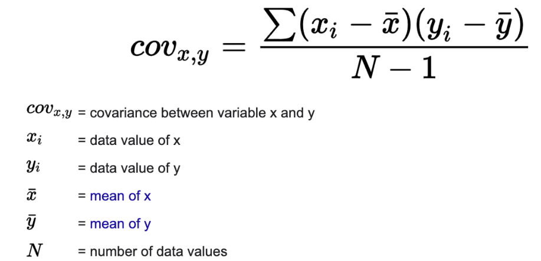

Introduction to PCA
PCA is an unsupervised analysis that reflects the true trend of the data itself.
PCA is one of the dimension reduction methods.The purpose of PCA (Principal Component Analysis) is to transform the original data into a new coordinate system, where the variance of the data along the axes is maximized. The first principal component (PC1) represents the direction of the greatest variance in the data, while the second principal component (PC2) is orthogonal to PC1 and represents the direction of the second greatest variance, and so on.
When you plot the results of PCA on a two-dimensional plane，you are essentially looking at the projection of the data onto these two main directions. The distance between points reflects their relative positions in these two directions, and indeed, it is the Euclidean distance.
However, remember that PCA involves a linear transformation of the data, implying that distances in the original data space may have been distorted. Thus, the Euclidean distances between points on a PCA plot might not fully represent the actual relationships in the original data, especially when the total variance explained by the principal components is relatively low.
Generally, the Principal Component Analysis(PCA) steps are:
- Scaling our data (if the columns don’t scale the same). This is important because PCA is an algorithm that is strongly influenced by the size of each column.
- Calculate Covariance Matrix
- Calculate Eigenvalues and Eigenvector
- Sort Eigenvalues and Eigenvector
- Pick top-2 or top-3 (or any amount of Principal Components that you want) eigenvalues
- Transform the original data
How to calculate covariance?
Here provides a formula for you.

Example codes in R
#install.packages("factoextra")
#install.packages("FactoMineR")
library("factoextra")## Loading required package: ggplot2## Welcome! Want to learn more? See two factoextra-related books at https://goo.gl/ve3WBalibrary("FactoMineR")
library(ggpubr)
data("iris")
head(iris)## Sepal.Length Sepal.Width Petal.Length Petal.Width Species
## 1 5.1 3.5 1.4 0.2 setosa
## 2 4.9 3.0 1.4 0.2 setosa
## 3 4.7 3.2 1.3 0.2 setosa
## 4 4.6 3.1 1.5 0.2 setosa
## 5 5.0 3.6 1.4 0.2 setosa
## 6 5.4 3.9 1.7 0.4 setosairis.pca <- PCA(iris[,-5], graph = FALSE)
# The quality of representation of the variables of the principal components are called the cos2.
print(iris.pca)## **Results for the Principal Component Analysis (PCA)**
## The analysis was performed on 150 individuals, described by 4 variables
## *The results are available in the following objects:
##
## name description
## 1 "$eig" "eigenvalues"
## 2 "$var" "results for the variables"
## 3 "$var$coord" "coord. for the variables"
## 4 "$var$cor" "correlations variables - dimensions"
## 5 "$var$cos2" "cos2 for the variables"
## 6 "$var$contrib" "contributions of the variables"
## 7 "$ind" "results for the individuals"
## 8 "$ind$coord" "coord. for the individuals"
## 9 "$ind$cos2" "cos2 for the individuals"
## 10 "$ind$contrib" "contributions of the individuals"
## 11 "$call" "summary statistics"
## 12 "$call$centre" "mean of the variables"
## 13 "$call$ecart.type" "standard error of the variables"
## 14 "$call$row.w" "weights for the individuals"
## 15 "$call$col.w" "weights for the variables"fviz_pca_ind(iris.pca, label="none")
fviz_pca_ind(iris.pca, label="none", habillage=iris$Species)
fviz_pca_ind(iris.pca, label="none", habillage=iris$Species,
addEllipses=TRUE, ellipse.level=0.95)
fviz_pca_biplot(iris.pca,
habillage = iris$Species, addEllipses = TRUE,
col.var = "red", alpha.var ="cos2",
label = "var") +
scale_color_brewer(palette="Dark2")+
theme_minimal()
fviz_screeplot(iris.pca, ncp=10)
plot(iris.pca, choix = "var")
fviz_pca_var(iris.pca, col.var="contrib")
fviz_pca_var(iris.pca, alpha.var="contrib")+
theme_minimal()
# Coordinates of individuals on the principal components
head(iris.pca$ind$coord)## Dim.1 Dim.2 Dim.3 Dim.4
## 1 -2.264703 0.4800266 -0.12770602 -0.02416820
## 2 -2.080961 -0.6741336 -0.23460885 -0.10300677
## 3 -2.364229 -0.3419080 0.04420148 -0.02837705
## 4 -2.299384 -0.5973945 0.09129011 0.06595556
## 5 -2.389842 0.6468354 0.01573820 0.03592281
## 6 -2.075631 1.4891775 0.02696829 -0.00660818head(iris.pca$ind$cos2)## Dim.1 Dim.2 Dim.3 Dim.4
## 1 0.9539975 0.04286032 0.0030335249 1.086460e-04
## 2 0.8927725 0.09369248 0.0113475382 2.187482e-03
## 3 0.9790410 0.02047578 0.0003422122 1.410446e-04
## 4 0.9346682 0.06308947 0.0014732682 7.690193e-04
## 5 0.9315095 0.06823959 0.0000403979 2.104697e-04
## 6 0.6600989 0.33978301 0.0001114335 6.690714e-06head(iris.pca$ind$contrib)## Dim.1 Dim.2 Dim.3 Dim.4
## 1 1.1715796 0.16806554 0.074085470 0.018798188
## 2 0.9891845 0.33146674 0.250034006 0.341474919
## 3 1.2768164 0.08526419 0.008875320 0.025915633
## 4 1.2077372 0.26029781 0.037858004 0.140000650
## 5 1.3046313 0.30516562 0.001125175 0.041530572
## 6 0.9841236 1.61748779 0.003303827 0.001405371plot(iris.pca, choix = "ind")
fviz_pca_ind(iris.pca)
fviz_pca_biplot(iris.pca, geom = "text")
References
https://bioconductor.org/packages/release/bioc/vignettes/roFFF/inst/doc/ropls-vignette.html https://bioconductor.org/packages/release/bioc/vignettes/PCAtools/inst/doc/PCAtools.html https://towardsdatascience.com/the-mathematics-behind-principal-component-analysis-fff2d7f4b643 https://www.mathsisfun.com/algebra/eigenvalue.html http://www.sthda.com/english/wiki/wiki.php?id_contents=7866 http://blog.codinglabs.org/articles/pca-tutorial.html https://www.youtube.com/watch?v=GEn-_dAyYME https://towardsdatascience.com/the-mathematics-behind-principal-component-analysis-fff2d7f4b643 http://blog.codinglabs.org/articles/pca-tutorial.html http://www.sthda.com/english/wiki/wiki.php?id_contents=7851 https://peterbloem.nl/blog/pca